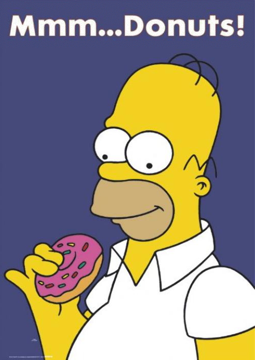

Conclusion, Current and Future Work

Contributions
- Analysis of issues of accessing external axioms from ATP
- Design, implementation, and testing of working system
- New capability for ATP
Current and Future Work
- Natural language (ACE) input and output (Partly done!)
- Ontology axiom selection using SInE (Student failed!)
- Automatic alignment of terminology between external sources
(Some parts done!)
- Automatic configuration of control features (Not done)
- Theoretical properties for ATP system (Not done)
- Question answering using TPTP standards (Externally done!)
- Make it play
Trivial Pursuit!